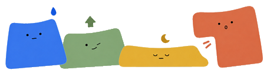
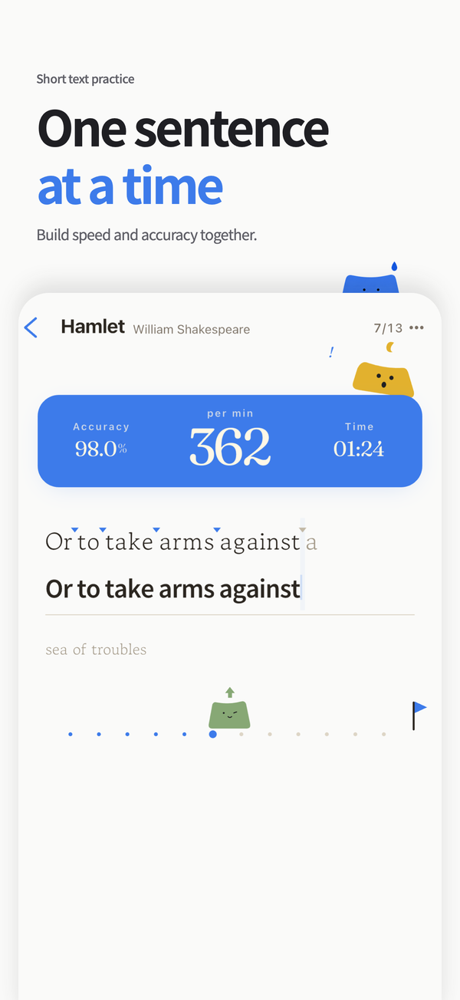
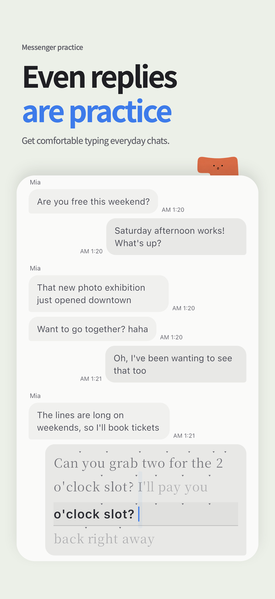
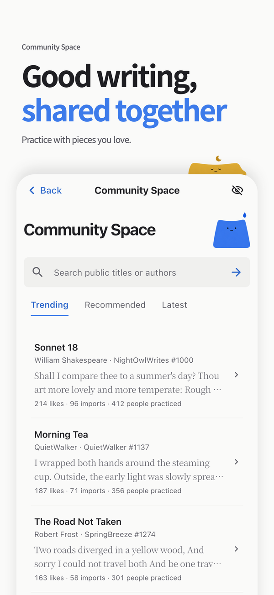
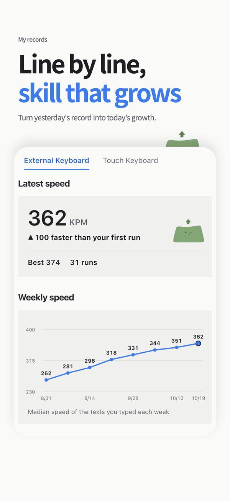
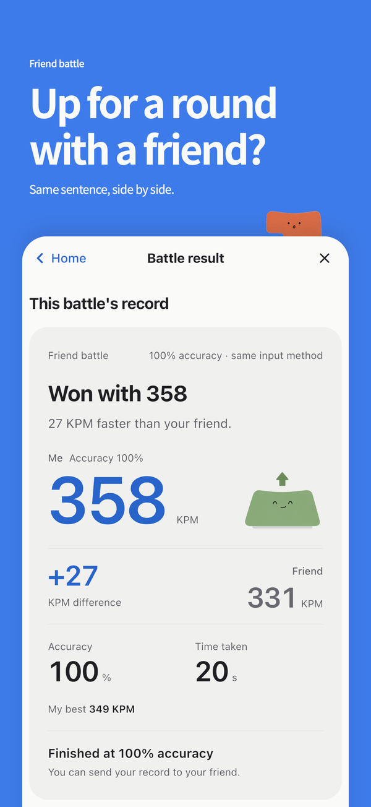
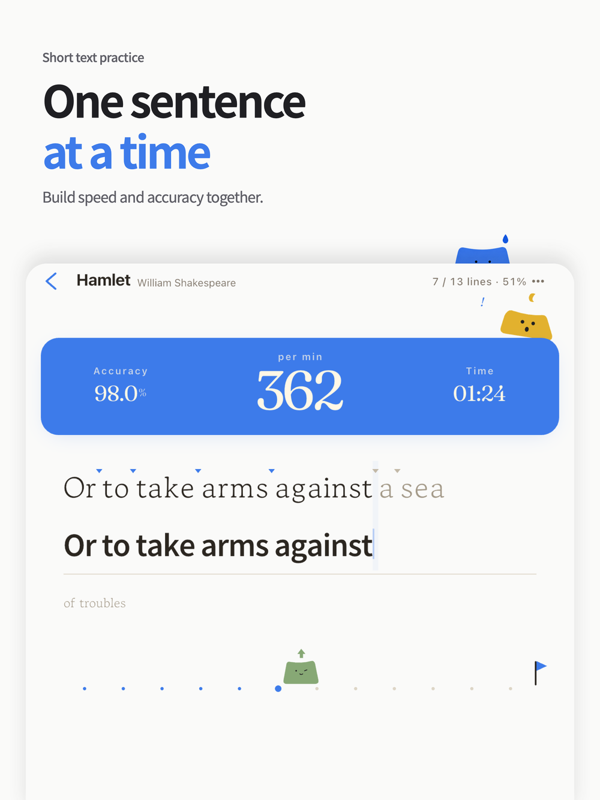

TADAK · KOREAN & ENGLISH TYPING
Made for your daily practiceOne sentence.
A little more fluent.
Start slowly. Find your rhythm.
Make Korean and English typing feel natural,
on your phone or your iPad keyboard.
Free to download · iPhone / iPad / Android Find your practice ↓


01 / FIND YOUR RHYTHM
What will you
type today?
A poem worth keeping. A reply to a friend.
Turn something you want to read into something you want to type.

Short texts. Lasting words.
Start with a sentence, then settle into classics: 10 poems and serialized novel excerpts.

Practice for real life.
From messenger replies to email. Explore proverbs, dictionary, wiki and Bible modes for more variety.

Good words, shared.
Discover trending and recommended texts in the community. Search for something you would love to practice.
Still finding your way around the keys?
Start with Korean or English key-position and word practice. Learn key locations with the finger guide, then move on to short texts.
02 / SEE YOUR PROGRESS
Small practice.
Visible progress.
Notice the extra speed. Catch the fewer mistakes.
My Records helps you see the rhythm of your progress.
-
Track speed and accuracy
Review your practice results and trends to see how your typing develops.
-
Understand your common mistakes
Find your weak points, then practice again with AI text tailored to them.
-
Rankings for the way you type
Touch and external keyboards have separate weekly rankings, so you compare like with like.

Sample records from the real app.
03 / BETTER TOGETHER
A little friendly
competition?
Same text. A fresh challenge.
Add a little friendly rivalry to your daily practice.
- Create a friend challenge link.
- Share the link with your friend.
- Type the same text and compare your results.

04 / YOUR KEYBOARD, YOUR PACE
Your iPad.
Your practice space.
Connect an external keyboard and settle in.
From focused keyboard practice to a quick touch-typing session, use the device you already enjoy.
-
External & Bluetooth keyboards
Learn the basics with the finger guide.

A SMALL TASTE OF TADAK
Try one sentence,
right here.
A quick taste before the app.
You can use your phone keyboard, too.
This web demo measures characters per minute (CPM).
Select the input to start. Mistakes are underlined.
Sentence complete!
0 CPM
0% accuracy
Discover more practice texts in the app.
05 / A FEW GOOD QUESTIONS
Before your
first sentence.
A few answers to help you find your rhythm.
Visit supportIs TADAK a free typing practice app?
Yes. TADAK is free to download on the App Store and Google Play.
Can I practice typing on an iPad with an external keyboard?
Yes. TADAK supports touch and external or Bluetooth keyboards on iPad, iPhone, and Android. Key-position practice includes a finger guide. Weekly rankings are separate for touch and external keyboards.
Does TADAK support Korean and English typing practice?
Yes. Both Korean and English are supported in key-position and word practice. Learn where the keys are, then build your confidence with sentences.
What kinds of text can I practice?
Practice short texts, classics, or real-world modes: messenger, email, proverbs, dictionary, wiki, and Bible. Classics include 10 poems and serialized novel excerpts. You can search trending community texts or create a practice text with AI writing.
Where can I see my typing speed and accuracy?
After practice, see your typing speed, accuracy, and elapsed time. My Records shows speed and accuracy trends, common mistakes, and weakness analysis. Continue with AI practice text tailored to your weak points.
How do I challenge a friend?
Create a challenge link in the friend challenge mode and share it. Your friend can join through the link and compete on the same text.
Can I change the font size or use dark mode?
Yes. TADAK supports dark mode and adjustable font sizes, so you can set up a comfortable practice screen for your device.
How can I get support or delete my account?
Visit the support page or email omilsoft@gmail.com. Account deletion instructions and details about personal data are linked in the footer under Account deletion and Privacy.
ONE SENTENCE AT A TIME.
Your next sentence
starts here.
TADAK · Korean & English typing practice · Free to download